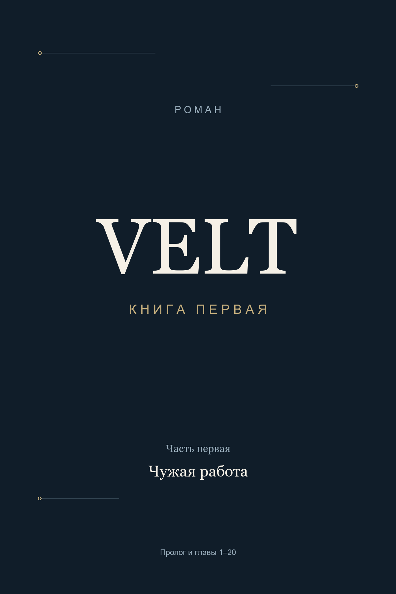

Роман · книга первая
VELT
Сначала им нужна была работа.
Потом пришлось научиться жить рядом с ней.
Маленькая мастерская. Четверо людей с долгами, семьями и разными надеждами. Компания, которая однажды изменит их жизнь — и потребует больше, чем они готовы отдать.
Начать читатьПролог и 20 законченных глав · 23 857 слов
О книге
Дело всей жизни
Лев приходит на работу и находит свой стул возле мусорного контейнера. Мастерская закрыта, зарплату не отдали, а дома ждут деньги за квартиру и лекарства для матери. Новое место предлагает Макс — молодой инженер, который снял тесное помещение у моста и решил открыть собственную компанию. Он не обещает Льву богатства. Только честную оплату каждую пятницу и возможность однажды сделать что-нибудь своё.
Так начинается VELT. С четырёх человек, подержанных инструментов и денег, которых всё время не хватает. С первых удачных испытаний и ошибок, за которые приходится отвечать. Пока они учатся работать вместе, рядом идёт другая жизнь: люди влюбляются, рожают детей, пытаются успеть к ужину и верят, что после следующего заказа наконец станет легче. Иногда счастье помещается за одним кухонным столом. Иногда возле этого стола остаётся пустой стул.
Пройдут годы. Устройства VELT будут покупать по всему миру, а в человеке, стоящем на сцене перед огромным залом, трудно будет узнать Макса из холодной мастерской. Лев останется рядом. Они слишком многое пережили вместе, чтобы сомневаться друг в друге из-за нескольких странностей. Именно поэтому первые тревожные вопросы так легко отложить. До лучших времён. До конца выпуска. До дня, когда появится больше доказательств.
Но однажды Лев поймёт: ждать больше нельзя. Чтобы спасти дело, которому он отдал жизнь, придётся поставить под угрозу всё, что это дело ему дало. Дружбу с основателем. Доверие семьи. Безопасность людей, которые не выбирали участвовать в чужой борьбе. А Максу предстоит услышать правду, после которой уже не получится просто вернуться к работе.
«VELT» — история о компании и людях, которые взрослели вместе с ней. О любви, способной пережить бедность, но не выдержать молчания. О предательстве, которое не сразу узнаёшь в знакомом лице. И о том, как продолжать жить, когда самое важное уже нельзя исправить.
Четыре части одной истории
Часть первая
Чужая работа
- •Пролог
- 1Свет над столом
- 2Два ключа
- 3Голубая чашка
- 4На настоящем складе
- 5За наш счёт
- 6День зарплаты
- 7Место для стула
- 8Возврат без чека
- 9Место у прохода
- 10Третья кружка
- 11Лишняя смена
- 12Сухие носки
- 13Человек из банка
- 14То что можно забрать
- 15Снег в вентиляции
- 16Пока не хватает
- 17Первая очередь
- 18Номер в телефоне
- 19Тёплая вода
- 20Свои имена
Роман задуман в четырёх частях и 80 главах. Первая часть опубликована целиком: пролог и главы 1–20. Части 2–4 пока написаны как подробный план; художественное продолжение ещё предстоит написать. Это текущая рукопись, а не готовые 800 страниц.